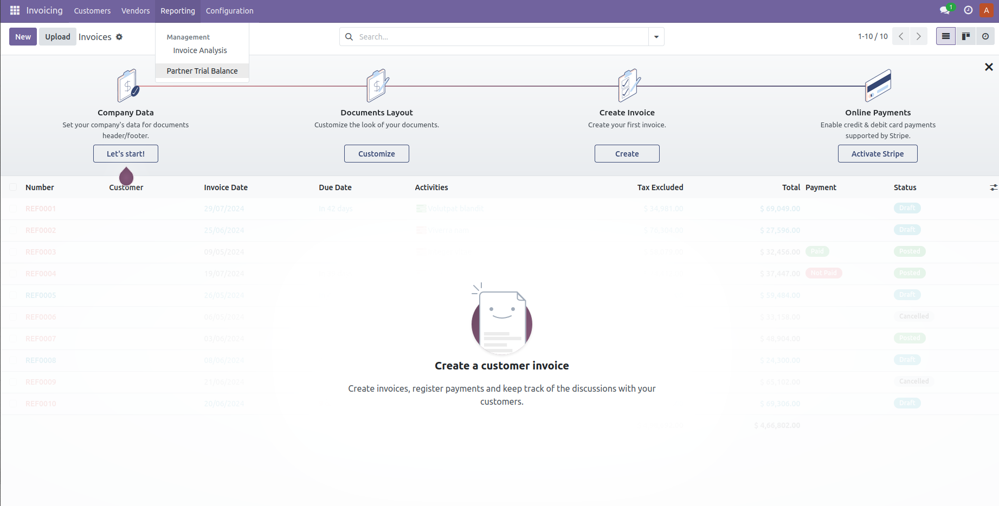
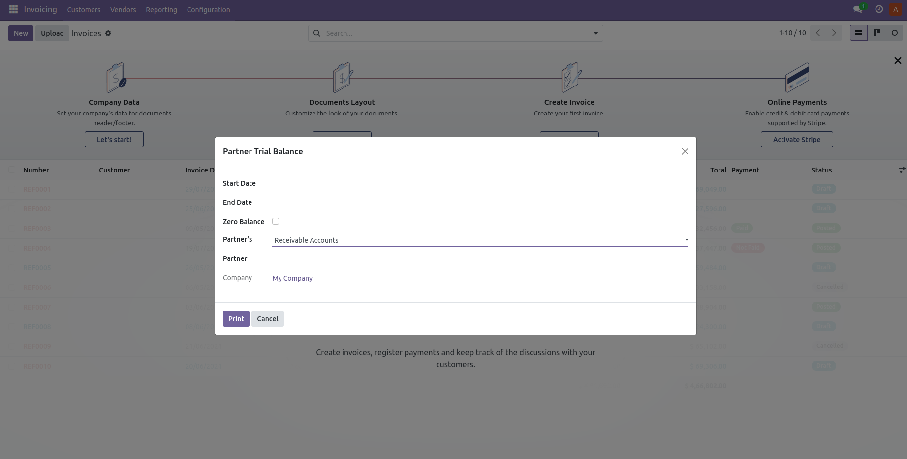

Overview
The Partner Trial Balance module for Odoo provides a detailed trial balance report for your partners. This helps in tracking all debit and credit transactions associated with each partner, ensuring accurate financial management and reporting.
Features
- Generate trial balance reports for specific partners
- Filter reports by date range
- View detailed debit and credit transactions
- Export reports to PDF
- Interactive and user-friendly interface
Usage
- Navigate to the Partner Trial Balance menu under Accounting/Reporting.
- Select the date range and partner for which you want to generate the report.
- Click on "Print" to view the trial balance.
Screenshots

